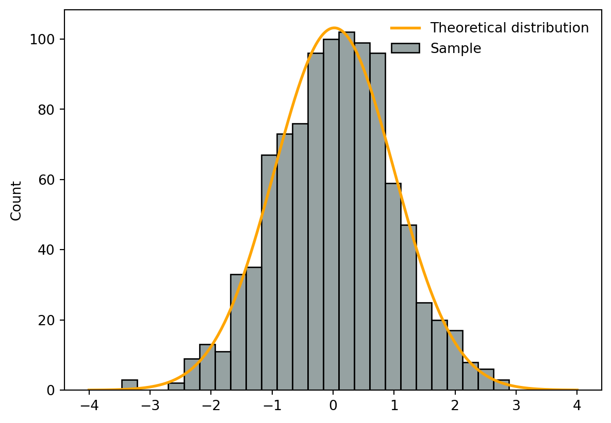
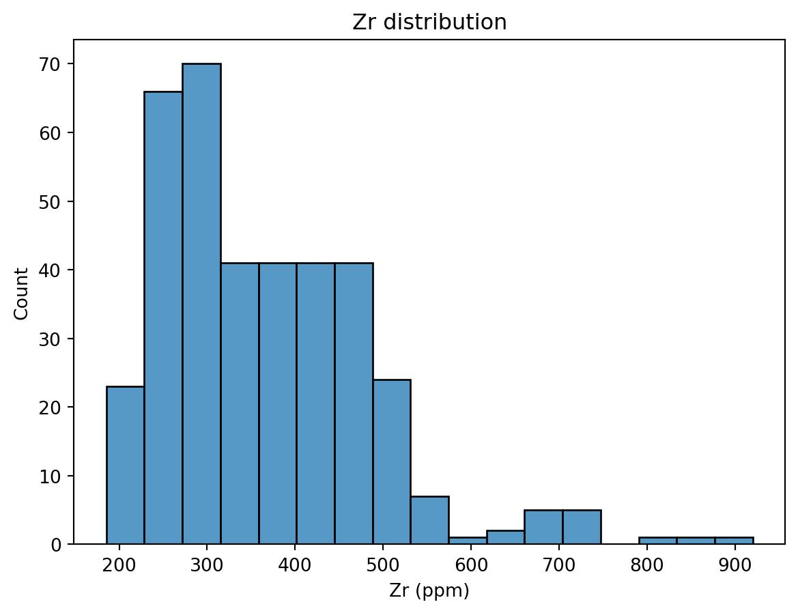
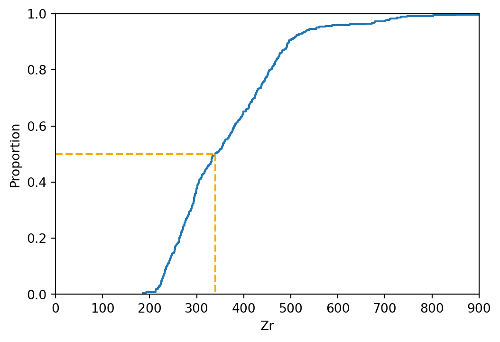
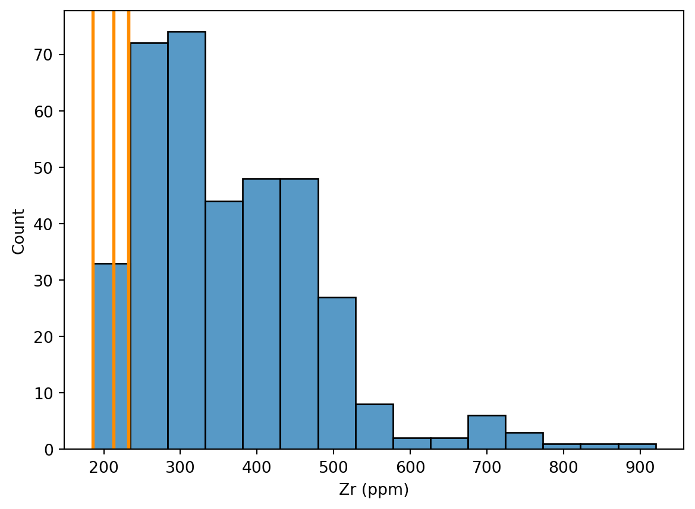
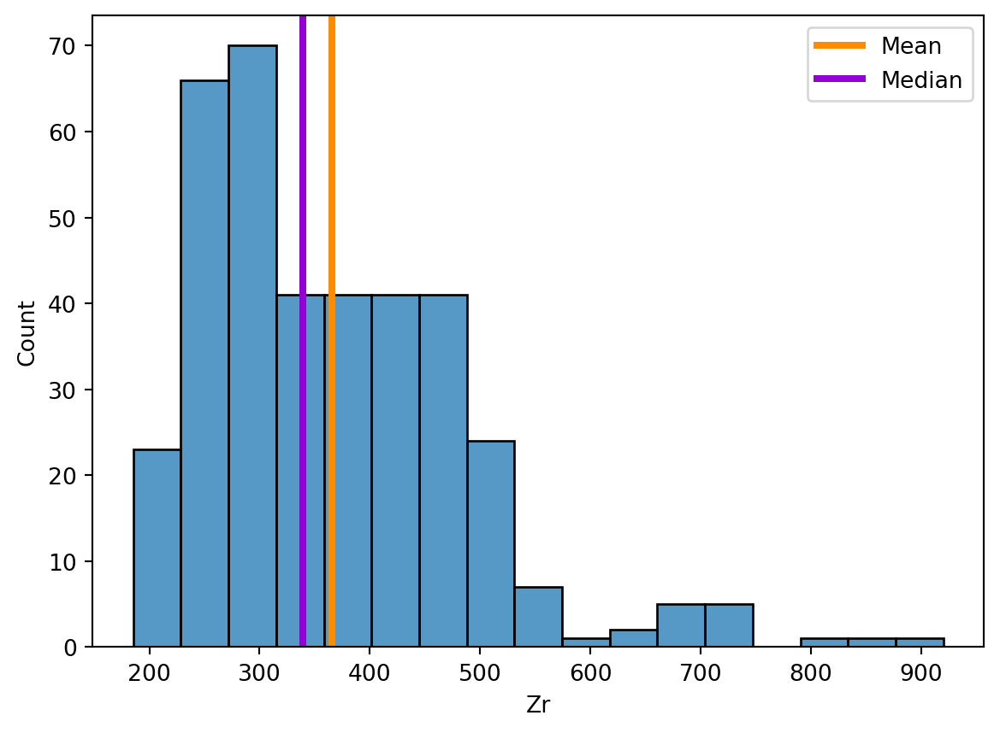

Univariate analyses
The objective of descriptive statistics is to provide ways of capturing the properties of a given data set or sample. Using Pandas and Seaborn, we will review some metrics, tools, and strategies that can be used to summarize a dataset, providing us with a quantitative basis to talk about it and compare it to other datasets.
The first aspect of descriptive statistics is univariate analyses, which focus on capturing the properties of single variables at the time. We are not yet concerned in characterising the relationships between two or more variables. The following sections introduce basic functions to visually analyse single variables and the most important parameters to describe them.
Plotting data distributions
Let’s focus on the Zircon concentration in Campi Flegrei’s geochemical dataset. We start by simply visualising the dataset to get an understanding of what we will talk about. The fist type of plot we will consider is a histogram, which shows the number of times a specific value occurs in a given variable. (Figure 2).
Visualising the dataset is a good way to start getting an idea of its structure. A histogram can be seen as a simple estimator of the underlying probability distribution of the variable:
- For a discrete random variable, this corresponds to the probability mass function (pmf), denoted \(p(x) = P(X = x)\), which assigns the probability that \(X\) takes the value \(x\).
- For a continuous random variable, this corresponds to the probability density function (pdf), denoted \(f(x)\), which describes how probability is distributed over intervals: the probability that \(X\) lies in an interval \([a,b]\) is given by \(\int_a^b f(x)\,dx\).
It is important to differentiate between theoretical distributions (e.g., normal, log-normal etc) and the distribution of the sample, for which we often don’t know the distribution. Figure 1 shows:
- Orange line → a continuous theoretical distribution (here a normal distribution)
- Blue histogram → a discretised sample (here taken from 1000 random numbers sampled from a normal distribution).
In Seaborn, Histograms can be plotted using sns.histplots(). Applied to our dataset, Figure 2) show the number of times a specific Zr concentration occurs in the dataset.
fig, ax = plt.subplots()
sns.histplot(data=df_traces, x='Zr')
ax.set_xlabel('Zr (ppm)');
ax.set_title('Zr distribution');
Note that histograms discretise the data into equal bins. The bin size (e.g., the width and numbers of bins) can alter the visual representation of the dataset. Although functions such as sns.histplots() rely on algorithm that suggest the optimal number of bins, it is a good practice to explore this parameter.
Your turn
- Histograms discretise the data into equal bins. The documentation of
sns.histplots()shows that the function accepts various arguments (e.g.,bins,binwidth,binrange) to modify how bins are defined. For now, let’s focus on thebinsargument, which takes anintnumber defining the number of bins. The number of bins can critically alter the representation of a histogram. For instance, try:bins=10bins=100
- Try and plotting more than one column to
sns.histplots()(→ provide a list of column names tox). How does it look? What are the limitations?
Visualising distributions of data with Seaborn
Seaborn has a great tutorial on visualising distributions of data - be sure to check it out at some point!
Descriptive parameters
By looking at the distribution from Figure 2, we can intuitively understand the importance of describing three different characteristics of the distribution:
- The location - or where is the central value(s) of the dataset;
- The dispersion - or how spread out is the distribution of data compared to the central values;
- The skewness - or how symmetrical is the distribution of data compared to the central values;
These aspects can be quantified using different statistical measures. Some, like the expectation and variance, are based on theoretical moments of the underlying random variable, while others, such as the median and interquartile range, rely on quantiles derived from the cumulative distribution function. In practice, we do not know the distribution of the random variable of interest. Hence, we estimate these quantities on the sample by computing estimators of these theoretical quantities.
Location
We will review three measures of location and their corresponding estimators:
- The expectation and the empirical mean;
- The median and the empirical median;
- The mode and the empirical mode.
Expectation and the empirical mean
The expectation (or theoretical mean) of a random variable \(X\) represents the average value that \(X\) would take over an infinite number of repetitions of the same experiment. It is defined as the first moment of the distribution of \(X\):
For a discrete random variable with probability mass function \(p(x)\):
\[\mathbb{E}[X] = \sum_x x\,p(x),\]For a continuous random variable with probability density function \(f(x)\):
\[\mathbb{E}[X] = \int_{-\infty}^{\infty} x\,f(x)\,dx,\]
Intuitively, the expectation describes the center of mass of the probability distribution.
The empirical counterpart of the expectation is the mean. The mean (or arithmetic mean - by opposition to geometric or harmonic means) is the sum of the values divided by the number of values (Equation 1):
\[ \bar{x} = \frac{1}{n} \sum_{i=1}^{n} x_i \tag{1}\]
The mean is meaningful to describe symmetric distributions without outliers, where:
- Symmetric means the number of items above the mean should be roughly the same as the number below;
- Outliers are extreme values.
The empirical mean of a dataset can easily be computed with Pandas using the .mean() function (Listing 1). Note that we round the results to two significant digits using .round(2).
df_traces[['Zr']].mean().round(2)Zr 365.38
dtype: float64
Question
What is the empirical mean value for Strontium?
Descriptive stats functions
Listing 1 shows how to compute the empirical mean on one column, but the .mean() function - as well as most fuctions for descriptive stats - can be applied to entire DataFrames. For this, we need to understand a critical argument - axis.
axis = 0is usually the default, and computes the mean across all rows for each column(Listing 2)axis = 1usually makes sense when rows are labelled, and computes the mean across all columns for each row(Listing 3)
# Create a subset of the df_traces containing numerical data
df_traces_sub = df_traces[['Sc','Rb','Sr','Y','Zr','Nb','Cs']]
# Compute the mean across all rows
df_traces_sub.mean(axis=0).round(2).head()Sc 0.20
Rb 343.82
Sr 516.42
Y 31.33
Zr 365.38
dtype: float64# Create a subset of the df_traces containing numerical data
df_traces_sub = df_traces[['Sc','Rb','Sr','Y','Zr','Nb','Cs']]
# Compute the mean across all columns
df_traces_sub.mean(axis=1).round(2).head()0 198.32
1 188.41
2 188.48
3 200.69
4 198.42
dtype: float64Median and empirical median
The median of a random variable \(X\) is the value that splits the distribution into two equal halves in terms of probability. Formally, the theoretical median \(m\) satisfies:
\[ P(X \le m) \ge 0.5 \quad \text{and} \quad P(X \ge m) \ge 0.5, \]
or equivalently, using the cumulative distribution function \(F_X(x)\):
\[ F_X(m) = P(X \le m) = 0.5. \]
In practice, we usually only observe a finite sample of \(X\). The empirical median is an estimator of the theoretical median, defined as the middle value of the sorted sample. There is no easy formula to compute the empirical median, instead we need to conceptually (Listing 4):
- Order all values in ascending order and plot them against a normalised number of observations (this is called an empirical cumulative density function - or ECDF);
- On the x-axis, find the point dividing the dataset into two equal numbers of observations;
- Read the value on the y-axis that intersects the ECDF.
fig, ax = plt.subplots(figsize=(6,4))
sns.ecdfplot(data=df_traces, x='Zr')
ax.plot([0, df_traces['Zr'].median()], [.5,.5], color='orange', linestyle='--')
ax.plot([df_traces['Zr'].median(), df_traces['Zr'].median()], [.5,0], color='orange', linestyle='--')
ax.set_xlim([0,900])
ax.set_ylim([0,1])
Fortunately, we can also use the native Pandas .median function (Listing 5).
df_traces['Zr'].median().round(2)np.float64(339.41)
Question
What is the empirical median value for Cesium?
Mode and empirical mode
The mode of a random variable \(X\) is the value that occurs most frequently in the distribution. Formally, the theoretical mode \(x_\text{mode}\) is:
- For a discrete variable: \(x_\text{mode} = \arg\max_x p(x)\), where \(p(x)\) is the probability mass function.
- For a continuous variable: \(x_\text{mode} = \arg\max_x f(x)\), where \(f(x)\) is the probability density function.
The empirical mode is an estimator of the theoretical mode, defined as the most frequent value in a sample (discrete) or the peak of a density estimate (continuous). A distribution can have one mode (unimodal), two modes (bimodal), or multiple modes (multimodal). In Pandas, the empirical mode is computed using .mode().
For categorical or discrete numerical data, the empirical mode simply the value(s) that appear most often.
For continuous data, exact duplicates may be rare, and resulting empirical modes might not be that meaningful (Figure 3). As a result, we often bin the data into intervals first and find the most populated bin (Figure 4).
Code
# Calculate the modes
modes = df_traces['Zr'].mode().round(2)
# Set the histogram's bin width
binwidth = 50
# Plot the histogram
fig, ax = plt.subplots()
sns.histplot(data=df_traces, x='Zr', ax=ax, binwidth=50)
# Plot the modes
for i, m in enumerate(modes):
ax.axvline(m, color='darkorange', lw=2)
ax.set_xlabel('Zr (ppm)')
plt.show()
Code
# Set the histogram's bin width
binwidth = 50
# Make the bin range
minVal = int(df_traces['Zr'].min()) # Minimum value of the dataset, convert it to an integer
maxVal = int(df_traces['Zr'].max()) # Maximum value of the dataset, convert it to an integer
binsVal = range(minVal, maxVal, binwidth)
binned = pd.cut(df_traces['Zr'], bins=binsVal)
modes = binned.mode();
# Convert modes to numeric positions (handles numeric modes and Interval modes from pd.cut)
numeric_modes = []
for m in modes:
numeric_modes.append((m.left + m.right) / 2) # midpoint of the interval
# Plot the histogram
fig, ax = plt.subplots()
sns.histplot(data=df_traces, x='Zr', ax=ax, binwidth=50)
# Plot the modes
for i, mval in enumerate(numeric_modes):
ax.axvline(mval, color='darkorange', lw=2)
ax.set_xlabel('Zr (ppm)')
plt.show()Summary
Listing 6 illustrate the values of the empirical mean and the empirical median relative to the distribution shown in the histogram. There are a few things to keep in mind when choosing between the empirical mean and median to estimate the location of a dataset:
- If a sample has a symmetrical distribution, then the mean and median are equal.
- If the distribution of a sample is not symmetrical, the mean should not be used.
- The mean is highly sensitive to outliers, whereas the median is not.
fig, ax = plt.subplots()
sns.histplot(data=df_traces, x='Zr')
ax.axvline(df_traces['Zr'].mean(), color='darkorange', lw=3, label='Mean')
ax.axvline(df_traces['Zr'].median(), color='darkviolet', lw=3, label='Median')
ax.legend()
Dispersion
We will review three measures of dispersion and their corresponding estimators:
- The range and the empirical range;
- The variance and standard deviation and the sample variance and standard deviation;
- The interquartile range and the empirical interquartile range.
Range and empirical range
The range of a random variable \(X\) is the difference between its maximum and minimum values:
- The theoretical range is defined as \(R = \sup(X) - \inf(X)\), i.e., the difference between the largest and smallest possible values of \(X\).
- The empirical range is computed from a sample as the difference between the maximum and minimum observed values. For this, we need to get the minimum (
df.min()) and maximum (df.max()) values, from which, when needed, the range can be calculated with Equation 2. It is however likely that the min/max functions will be more frequently used (Listing 7).
\[ R_\text{emp} = \max(x_1, \dots, x_n) - \min(x_1, \dots, x_n). \tag{2}\]
df_min = df_traces['Zr'].min()
df_max = df_traces['Zr'].max()
df_range = df_max - df_min
print(f"The range of Zircon concentrations is {df_range:.2f}")The range of Zircon concentrations is 734.76
Don’t use Python reserved keywords as variable names
Names as min, max or range represent native Python variables and cannot be used as variable names!
Question
What is the empirical range for Cesium?
Variance and standard deviation and sample variance and standard deviation
The variance and standard deviation are two key measures of dispersion that describe how spread out the values of a random variable \(X\) are.
The theoretical variance is defined as: \[ \mathrm{Var}(X) = \mathbb{E}[(X - \mathbb{E}[X])^2], \] and the theoretical standard deviation is its square root: \[ \sigma = \sqrt{\mathrm{Var}(X)}. \]
The sample variance \(s^2\) estimates the spread of the data around the sample mean \(\bar{x}\): \[ s^2 = \frac{\sum_{i=1}^{n} (x_i - \bar{x})^2}{n-1}, \] where \(x_1, \dots, x_n\) are the observed values and \(n\) is the sample size.
The sample standard deviation \(s\) is the square root of the sample variance: \[ s = \sqrt{s^2}. \]
Both the sample variance and sample standard deviation describe the spread of the data. While the variance is expressed in squared units of the observations, the standard deviation is in the same units as the data, making it easier to interpret.
Relation to the Gaussian distribution:
For a Gaussian (normal) distribution, about 68% of the data falls within one standard deviation of the mean, about 95% within two standard deviations, and about 99.7% within three standard deviations. Thus, variance and standard deviation are fundamental for describing the spread and probability intervals of normally distributed data.
You can compute these in pandas using .var() and .std():
# Compute the variance of a single column:
df_traces['Zr'].var()
# Compute the standard deviation of all columns in the DataFrame. In this case, you need to make sure that all columns are numerical.
df_traces_sub.std()Sc 0.096033
Rb 46.931995
Sr 241.922439
Y 7.369875
Zr 118.409962
Nb 18.185616
Cs 6.851486
dtype: float64Interquartile range and the empirical interquartile range
If the standard deviation is valid only for symmetrical distributions, what can we use for asymmetrical ones? The interquartile range can help, but we first need to define what are percentiles. We previously saw that the empirical median represents the value at the middle of the dataset, which means that:
- Half of the data points is greater than the empirical median;
- The other half is smaller than the empirical median.
The empirical median therefore represents the 50th percentile of the dataset. In a similar way, we can ask ourselves:
- What is the value below which lie 25% of the data? → 25th percentile;
- What is the value below which lie 75% of the data? → 75th percentile.
Figure 5 and Figure 6 show the relationship between the percentiles and the underlying distribution of data, where:
- The blue area shows the histogram (→ how many data points fall into a specific bin = discrete range of values?)
- The orange curve shows the cumulative function (→ what proportion of data falls below a specific value?)
Figure 5 shows the percentiles of a symmetric distribution, and demonstrates how i) the median value is equal to the mean and ii) the 25thand 75th percentile are equally dispersed around the median. In contrast, for asymmetric distributions, Figure 6 shows that i) the median and mean values increasingly diverge and ii) the 25thand 75th percentile are asymmetrically dispersed around the median.
Code
# Import the libraries
import numpy as np
import matplotlib.pyplot as plt
import seaborn as sns
from matplotlib.patches import FancyArrowPatch
# Function to plot the arrow
def plotArrow(ax,data,pct,c):
arrowH = FancyArrowPatch(
(ax.get_xlim()[1], pct/100), (np.percentile(data, pct), pct/100),
arrowstyle='-|>', # style: arrow with single head
color=c,
mutation_scale=15, # size of arrow head
linewidth=2
)
ax.add_patch(arrowH)
value = np.percentile(data, pct)
ax.text(8, pct/100 + 0.03, f"{pct}th: {value:.2f}", color=c, ha='center', va='bottom', fontsize=12, fontweight='bold')
arrowD = FancyArrowPatch(
(np.percentile(data, pct), pct/100), (np.percentile(data, pct), 0),
arrowstyle='-|>', # style: arrow with single head
color=c,
mutation_scale=15, # size of arrow head
linewidth=2
)
ax.add_patch(arrowD)
# Plot the mean as a vertical red dotted line on the histogram axis
ax.axvline(data.mean(), color='red', linestyle=':', linewidth=2)
# Setup random data using a Normal distribution
data = np.random.normal(size=1000)
data = (data - data.min()) / (data.max() - data.min())*10
datapct = np.percentile(data, [10, 25, 50, 75, 90])
# Set the plots
fig, ax = plt.subplots(figsize=(6, 4))
# Left y axis
sns.histplot(x=data, bins=20, color=blue, alpha=0.4, ax=ax, label='Density', element='step')
ax.set_xlabel('Data value (arbitrary)')
ax.set_ylabel('Count (= number of data points \nin each bin)', color=blue)
ax.tick_params(axis='y', labelcolor=blue)
ax.set_title('Percentiles of a symmetric distribution', fontweight='bold')
# Add a right y axis
ax2 = ax.twinx()
sns.ecdfplot(x=data, ax=ax2, color=orange, label='Cumulative density')
ax2.set_ylabel('CDF (= proportion of data\n points below the data value)', color=orange)
ax2.tick_params(axis='y', labelcolor=orange)
# Plot the arrows
plotArrow(ax2, data, 75, '#1D6996')
plotArrow(ax2, data, 50, '#0F8554')
plotArrow(ax2, data, 25, '#994E95')
fig.tight_layout()
fig.savefig("img/fig-univ-pctS.png", dpi=150, transparent=True)
plt.close(fig)
Code
# Setup random data using a log-normal distribution
data = np.random.lognormal(size=1000, sigma=.4)
data = (data - data.min()) / (data.max() - data.min())*10
datapct = np.percentile(data, [10, 25, 50, 75, 90])
# Set the plots
fig, ax = plt.subplots(ncols=1, figsize=(6, 4))
# Left y axis
sns.histplot(x=data, bins=20, color=blue, alpha=0.4, ax=ax, legend=None, element='step')
ax.set_xlabel('Data value (arbitrary)')
ax.set_ylabel('Count (= number of data points \nin each bin)', color=blue)
ax.tick_params(axis='y', labelcolor=blue)
ax.set_title('Percentiles of an asymmetric distribution', fontweight='bold')
# Add a right y axis
ax2 = ax.twinx()
sns.ecdfplot(x=data, ax=ax2, color=orange, legend=None)
ax2.set_ylabel('CDF (= proportion of data\n points below the data value)', color=orange)
ax2.tick_params(axis='y', labelcolor=orange)
# Plot the arrows
plotArrow(ax2, data, 75, '#1D6996')
plotArrow(ax2, data, 50, '#0F8554')
plotArrow(ax2, data, 25, '#994E95')
fig.tight_layout()
fig.savefig("img/fig-univ-pctA.png", dpi=150, transparent=True)
plt.close(fig)
The interquartile range (\(IQR\)) is the spread between the first (\(Q_1\)) and third (\(Q_3\)) quartiles, which represent the 25\(^\text{th}\) and 75\(^\text{th}\) percentiles, respectively (see Table 1 and Tip 1 for a relationship between percentiles, quartiles, and deciles).
The theoretical IQR of a random variable \(X\) is defined as: \[ IQR = Q_3 - Q_1 = F_X^{-1}(0.75) - F_X^{-1}(0.25), \] where \(F_X^{-1}\) is the inverse of the cumulative distribution function of \(X\).
The empirical IQR is an estimator of the theoretical IQR, computed from a sample as the difference between the \(75^\text{th}\) and \(25^\text{th}\) percentiles of the observed data. It represents the range within which 50% of the sample values lie: \[ IQR_\text{emp} = Q_{3,\text{emp}} - Q_{1,\text{emp}}. \tag{3}\]
The IQR is a robust measure of dispersion, less sensitive to extreme values than the variance or range.
Tip 1: Quartiles, deciles and percentiles
Using proportions of the dataset as measures of central tendencies and spread can be done using different strategies to divide the distribution, but they really refer to the same underlying values. Table 1 summarises the differences between quartiles, deciles and percentiles.
| Measure | Number of Divisions | Position(s) in Data / Percentile Equivalent | Description |
|---|---|---|---|
| Quartiles (Q1, Q2, Q3) | 4 equal parts | Q1 = 25th percentile, Q2 = 50th percentile (median), Q3 = 75th percentile | Divides data into 4 equal-sized groups |
| Deciles (D1 … D9) | 10 equal parts | D1 = 10th percentile, D2 = 20th percentile, …, D9 = 90th percentile | Divides data into 10 equal-sized groups |
| Percentiles (P1 … P99) | 100 equal parts | P1 = 1st percentile, P2 = 2nd percentile, …, P99 = 99th percentile | Divides data into 100 equal-sized groups |
Skewness and sample skewness
The skewness measures the asymmetry of a distribution, indicating whether the data are more spread out on one side of the mean than the other.
The theoretical skewness of a random variable \(X\) is defined as: \[ \text{Skewness} = \frac{\mathbb{E}\big[(X - \mathbb{E}[X])^3\big]}{(\mathrm{Var}(X))^{3/2}}, \]
The sample skewness is an estimator of the theoretical skewness, computed from a sample \(x_1, \dots, x_n\) and is computed as Equation 4: \[ \text{Skewness}_\text{emp} = \frac{1}{n} \sum_{i=1}^{n}\left(\frac{x_i-\bar{x}}{s}\right)^{3}, \tag{4}\]
Positive skewness indicates a distribution with a longer right tail, while negative skewness indicates a longer left tail.
In Pandas, the skewness can be computed using .skew() (Listing 9). The returned value indicates:
- 0: Symmetric → e.g., normal distribution
- >0: Righ-skewed → a tail extends to the right
- <0: Left-skewed → a tail extends to the left
Zr dataset.
df_traces['Zr'].skew().round(2)np.float64(1.27)Non-parametric distribution visualisation
We have reviewed several measures that describe the central tendency and spread of a dataset. Depending on the characteristics of the data, some measures are more informative than others. For instance, the mean and standard deviation provide a concise summary of the center and spread, but they can be heavily influenced by extreme values or skewed distributions. In contrast, measures based on percentiles, such as the interquartile range (IQR), describe the spread of the data without being overly sensitive to outliers. The IQR captures the range of the central \(50\%\) of the data, giving a robust sense of variability even in asymmetrical distributions. Reporting additional percentiles, such as the \(10^\text{th}\) and \(90^\text{th}\), can further help to convey the shape and spread of the dataset, providing a more complete picture than a single range or standard deviation alone.
One way to efficiently convey the structure of a dataset is through non-parametric representations of distributions, which do not rely on assumptions about the underlying distribution. Boxplots (or box-and-whiskers plots; Figure 7) are a classic example: they summarize the data using a few key quantiles, such as the median and interquartile range (IQR). Because boxplots rely on these order-based statistics rather than moments like the mean or variance, they are considered non-parametric, making them especially useful for datasets that are skewed, contain outliers, or deviate from symmetry. By focusing on the spread and central tendency through quantiles, boxplots provide a robust visual summary of the data’s location, dispersion, and potential asymmetry.
- The box represents the \(25^\text{th}\) and \(75^\text{th}\) percentiles → \(IQR\);
- The horizontal line within the box represents the median;
- The whiskers reprents a range that usually extends 1.5 times the IQR from the first and third quartiles
- Any point that lies beyond the whiskers is considered an outlier, which is a point that significantly different from the majority of observations.

In Seaborn, box plots can be plotted using sns.boxplot(). Two notes about box plots:
- They are useful to compare the location and dispersion between variables (Figure 8);
- In Seaborn, whiskers extend by default 1.5 times the IQR from the first and third quartiles. This behaviour can be altered with the
whisargument ofsns.boxplot()(see the doc)
Seaborn offers two alternatives to boxplots:
- Violin plots (
sns.violinplot()) are similar to box plots, but they approximate the underlying parametric data distribution using some smoothing algorithm (i.e. kernel density estimation). Without going into too much detail, this provides a good first approximation of the distribution, but it can create some unrealistic artefacts (e.g., see the negative Sr concentrations in Figure 9). - Boxen plots (
sns.boxenplot()) are designed to better represent the non-parametric distriubtion of large dataset than box plots. They divide the datasets into many quantiles (not just Q1-Q3), and typically provide more resolution in the tails of the distribution (Figure 10).
Table 2 provides a cheat sheet on which plot to use.
| Feature | Box Plot | Boxen Plot | Violin Plot |
|---|---|---|---|
| Data size | Small/medium | Large | Any |
| Shows tails well? | No | Yes | Yes |
| Shows data density? | No | No | Yes |
| Complexity | Simple | Moderate | High |
| Implementation | sns.boxplot() |
sns.boxenplot() |
sns.violinplot() |
Your turn
Take some time to get familiar with the use of these plotting functions!
- Plot different/more variables
- Check out the documentation
- Ask questions!
Grouping variables
Cool, we now have the tools to describe the behaviour of single numerical variables. However, as described here, we see that our dataset also contains categorical variables, and we are going to see now how we can exploit them to apply what we just learned on specific categories of our dataset.
For the sake of simplicity, let’s make a subset of the trace elements dataset, from which we select:
- 5 numerical data → U, Sc, Hf, Zr, Sr
- 1 categorical data → Epoch
Panda as a very handy function to group data by categorical variables: .groupby (doc). Let’s compute the mean value of the different trace elements for each epoch (Listing 10):
df_traces_sub = df_traces[['Epoch', 'U', 'Sc', 'Hf', 'Zr', 'Sr']]
df_traces_sub.groupby(by='Epoch').mean()| U | Sc | Hf | Zr | Sr | |
|---|---|---|---|---|---|
| Epoch | |||||
| one | 7.191232 | 0.272517 | 5.892144 | 257.126861 | 786.792362 |
| three | 11.788916 | 0.148395 | 9.159857 | 407.192193 | 390.263016 |
| three-b | 10.908569 | 0.138119 | 8.455954 | 392.716029 | 422.469727 |
| two | 15.087289 | 0.272342 | 12.777728 | 574.092093 | 147.769833 |
Pretty handy don’t you think? Note that you can apply all the functions described above (e.g., .median() or .percentiles()) to a groupby object.
Question
- Try and apply other statistical functions to your dataset.
- Looking at the documentation, it seems the
byargument accepts a label (which is what we use in Listing 10) or a list of labels. Could it be that we can use more than one grouping variable? Such as'Epoch'and'Eruption'?